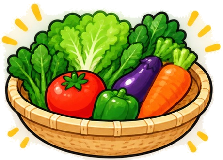
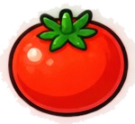
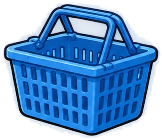
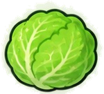

いらっしゃいませ！スーパーを 歩いていると、ザルに 入った やさいの 写真が ながれてくるよ。 止まったら「この やさいの 名前は？」。4つから えらんで、かごに 入れてね。


この やさいの 名前は？
写真は、自由に つかって よい 写真を ウィキメディア・コモンズ から かりて、大きさを そろえた ものです。とった人・ライセンス・もとの ページは つぎの とおりです。ひとことの 文は この ゲームで 書いた ものです。